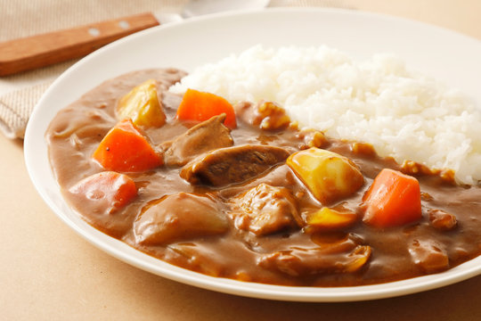

HOME
カレーライス

どんな料理？
カレーライスは、日本の家庭料理の定番で、みんな大好きです。
スパイスのバランスが絶妙で、豊かな風味のカレーソースが特徴です。野菜や肉を使った簡単に作れる家庭料理です。
材料
- 牛肉、鶏肉、または豚肉など（お好みに合わせて選んでください）
- 玉ねぎ
- じゃがいも
- 人参
- 日本のカレールー
作り方
- 大きな鍋に少量の油を中火で熱し、肉を加えて全体が均一に焼き色がつくまで炒める。
- スライスした玉ねぎ、じゃがいも、人参を鍋に加え、数分間炒めて野菜が少し柔らかくなるまで炒める。
- 水を鍋に加え、沸騰させる。沸騰したら火を弱め、約15分間煮込んで野菜が柔らかくなるまで調理する。
- カレールーを小さく割りながら鍋に加え、よく混ぜて完全に溶けるまでかき混ぜる。さらに10分間煮込んでソースがとろみを帯びるまで煮る。
- 炊いたご飯の上にカレーをかけたら完成！